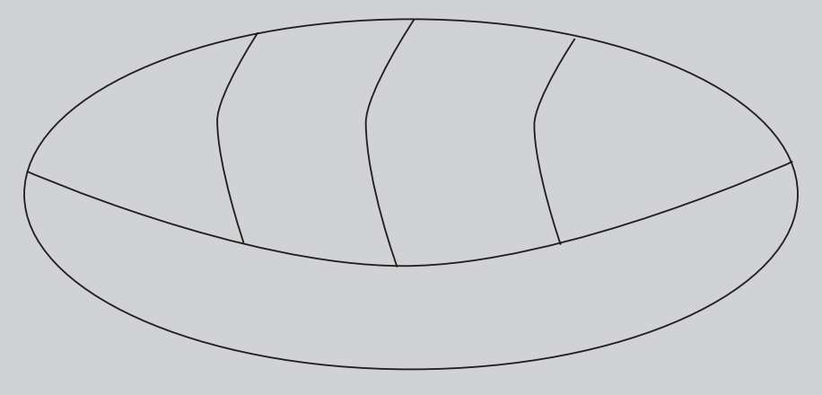

），毕达哥拉斯的追随者该是何等困惑。毫无疑问，他们会极力抹杀这样一个令人不安的发现。
），毕达哥拉斯的追随者该是何等困惑。毫无疑问，他们会极力抹杀这样一个令人不安的发现。如果有一天晚上，趁我们在床上熟睡之际数字连同数学全部消失，等到第二天醒来，我们的世界里没有了电脑、电视、收音机、手机，就连泡茶的水壶都不见踪影……那么整个世界会变成什么样？人类社会离不开数字，数字已经将我们征服。而且数字对我们的“统治”不只出现在以数码科技为基础的现代社会，事实上从古至今一贯如此。早在史前时代，数字就已经开始用来记录、指导人类的各种活动，成为文明发展最基本的工具。
所有文明都发展出了自己的数制，并且每一种文明的数制都有自己的表示方法。然而所有的数制都有着相同的功能，它们分别是计数、排序、计量、编码。
其中计数和排序的功能最为显著。为了计数，我们必须为对象赋值，换句话说就是赋予它们一个数字。等到有了一系列的赋值对象后，人们自然而然地就会对其排序。因为计量和编码这两个功能有着更高的复杂性，所以在历史上出现的更晚。计量需要用标准来设定每一种尺寸的单位，这样就可以有效地比较不同的测量结果。编码功能出现的时间离我们更近，它可能在四者中出现的最晚。但是如果没有编码——加密或许是目前更为普遍的叫法——也就没有现代社会。
婆罗摩笈多（598—668）
印度数学家、天文学家婆罗摩笈多曾在628年出版了《婆罗摩修正体系》（Brahmasphuta-siddhanta）一书。这本书首次采用了完整的十进制，与今天的十进制几乎完全相同。然而现代用来表示十进制的符号却是阿拉伯人的发明。
0——最重要的数字
0是现代数制的基础。数学家兼历史学家乔治斯·伊弗拉解释说：“如果没有零和进位制，人类就不会发明出机械和自动化计算。”
为了突出0的重要性，我们用罗马的非进位制来演示一个简单的乘法。由于罗马数制中没有0，如果要写出138乘以570，就需要用CXXXVIII乘以DLXX来表示。即便我们知道如何开始计算，也肯定能预料到想算出结果会非常困难。计算过程看起来十分冗长，而且特别无聊。这还算是比较简单的，只是两个三位数相乘而已。上面这个例子说明，现代数制的主要特点不仅是以10为基数，而且每一个数位的值都由代表自己的数字符号（比如1、2等）和它相对于其他数字的位置（比如12和21）决定。因此我们的十进制仅需要10个符号就可以表示任何数字。
更加重要的是，所有的空缺数位都需要一个名字以及代表它的符号。所以为了表示“什么都没有”，我们不说“那里没有数字”，而是说“那里有零个数字”，并且把“什么都没有”记作“0”。（今天的圆形符号0是由最初使用的圆点演变而来的。）
为0赋值就相当于让“某种不存在的东西”等同于“某种缺少的东西”（这样，“不存在”就变成了“存在”）。这听上去似乎没有什么意义，但是0与商业贸易的兴起有着必然的联系，而且随着时间的流逝，这种联系越来越紧密。举例来说，在欧洲文艺复兴时期，许多领域都是从无到有地发展起来的，也就是“从零开始”。
0的单独使用最早见于公元前1世纪的玛雅象形文字。但是，玛雅文明采用的却是非进位制。表示1的符号就是一个点，5就是一条线，14就是四个点（四个1）加上两条线（两个5），其他数字依次类推。

人们最先使用的数字叫“自然数”（1、2、3、4、5……）。毕达哥拉斯的学说在古希腊的数学界极具影响力，而且依然是当今数学的根基。“万物皆数”是其哲学基石。数学家把自然数和分数统称为有理数，“rational”（有理数）与“ration”（定量）的词根相同，而“ration”又与“ratio”（比例）相关。一旦知道了这些，我们就能更好地理解有理数。所以，一个数之所以叫作有理数是因为它来源于比例，而不是因为它的另一个含义——“合理的”。
毕达哥拉斯及其追随者早在20多个世纪前就知道2不是有理数，因为它无法写成两个自然数之比。毕达哥拉斯学派认为数字是神圣的符号，他们相信数字可以衡量世间的一切，数字是万物的本源。因此，一个无法用数字表示的概念有悖于该学派的哲学基石。
我们把除有理数以外的实数称为“无理数”。这个名字更加具有误导性。无理数只表示那些不能写作两个自然数之比的实数。下面让我们想象一下，在面对无法准确计算的无理数时，比如正方形的一条对角线的长度（或），毕达哥拉斯的追随者该是何等困惑。毫无疑问，他们会极力抹杀这样一个令人不安的发现。
在数学领域，有理数和无理数之间有很多差异，但在人们看来，或许“节奏感”（musicality）的差异才是最有趣、最直观的。尽管我们不能严格地将其看作数学上的差异，但造成这种差异的主要原因是有理数和无理数的小数部分存在不同。
有理数的小数部分从某一位开始，一个或几个数字依次重复出现，这种小数称为“循环小数”。而无理数的小数部分并不会按照任何特定的排列形式循环往复，依次出现的数字毫无规律可言。如果我们为每一个数字指定一个音阶，然后“演奏”循环小数的小数部分，就会听到像副歌一样重复的旋律。相比之下，“演奏”无理数的小数部分则会听到一团杂乱刺耳的噪音。